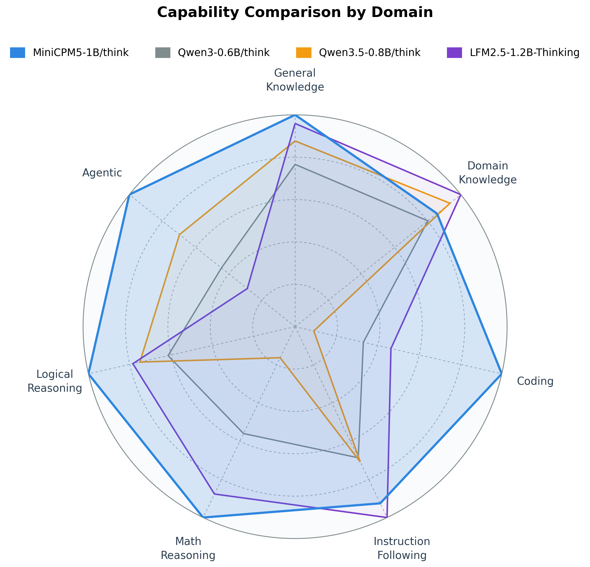
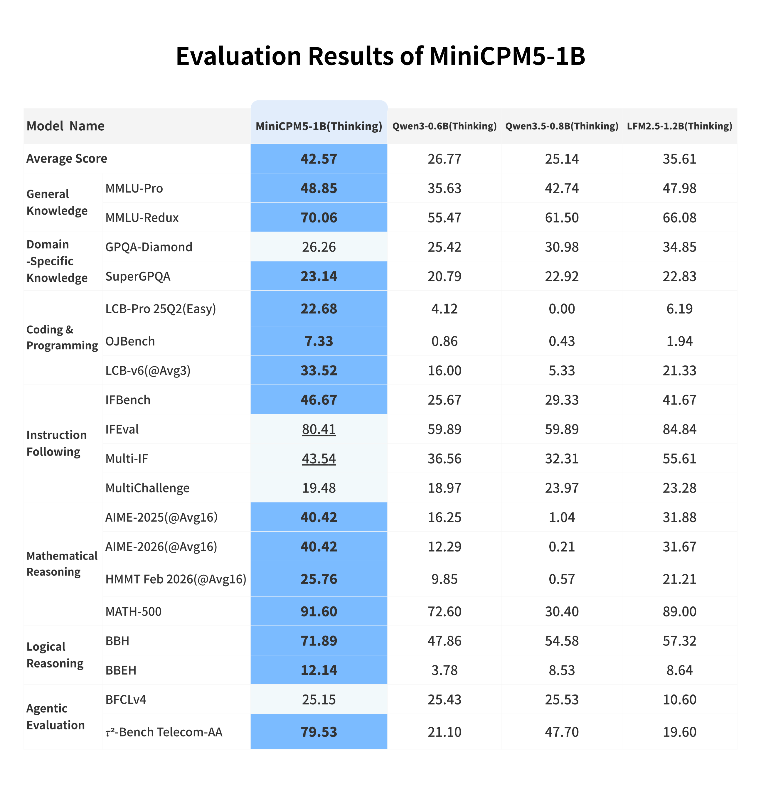
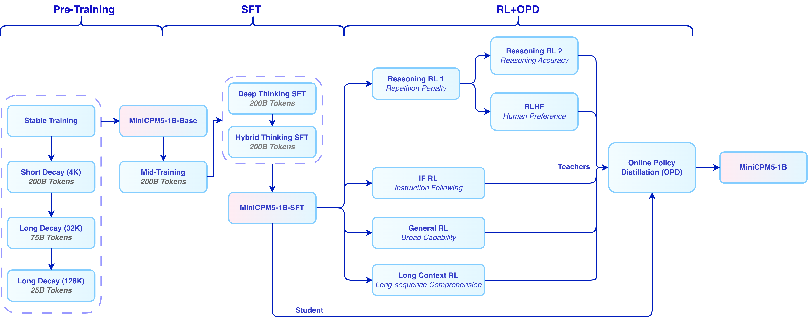
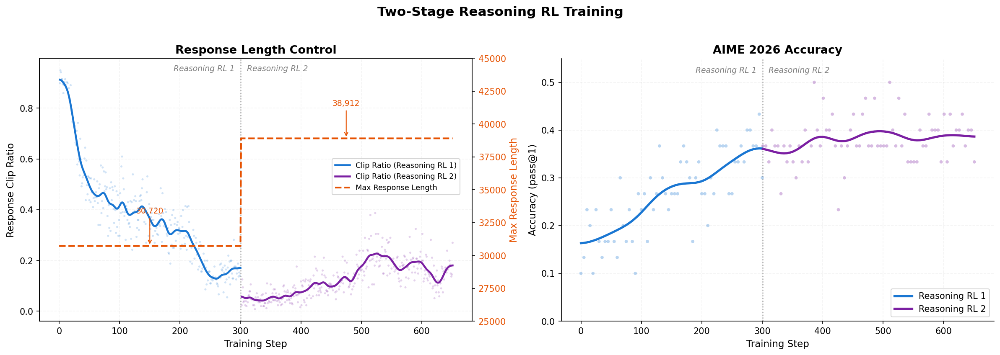
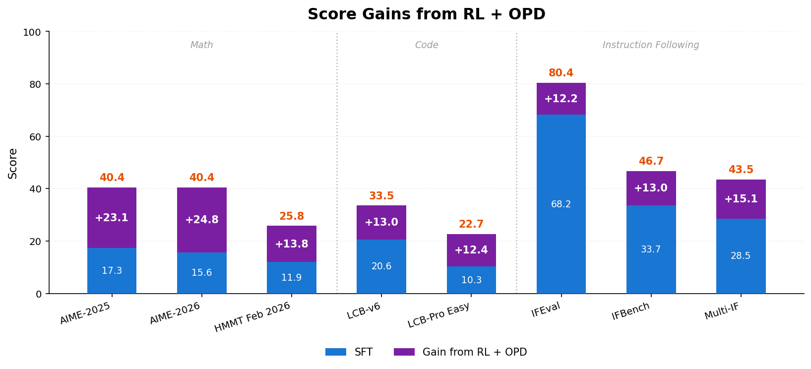
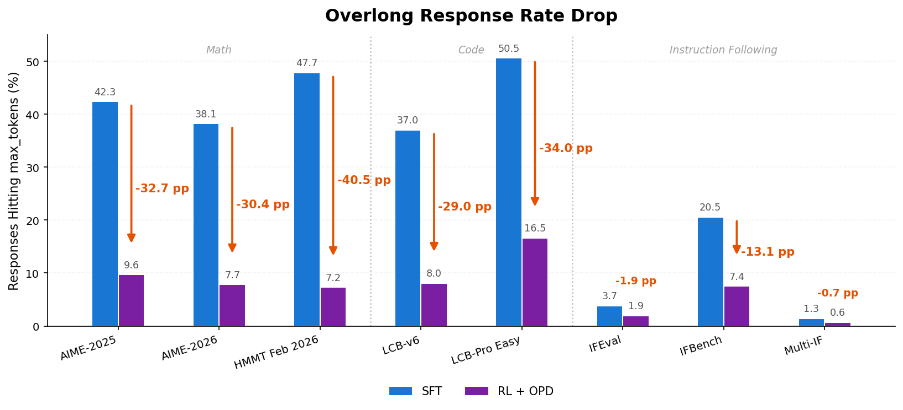

MiniCPM5-1B · 官方模型卡中文译文
资料核查：2026-10-12。OpenBMB 官方答复明确当前没有 MiniCPM5 独立技术报告。模型卡中的技术报告链接和 BibTeX 指向 MiniCPM4；此处保留原文引用，并可阅读已有 MiniCPM4 译文。
正文采用官方英文模型卡为核对基准，复用官方中文译文并修订术语与版本差异；所有代码保留英文原始示例。英文原始图表保存于 assets/images/minicpm5/，图内文字不翻译。1B：官方仓库更新日志记为 2026-05-19；面壁官网新闻称 5 月 25 日发布，新闻登记为 5 月 26 日。各来源日期口径存在差异。
官方来源：Hugging Face 模型卡 · 官方中文版本 · 官方仓库 · 模型集合。
官方中文博客：MiniCPM5-1B 发布文章 · 训练数据开放文章。官方面壁官网提供这些入口，但当前微信正文被验证页拦截，未获取全文，未计入译文覆盖。
许可与归属：原文、图表归 OpenBMB 及原作者；模型卡声明采用 Apache-2.0 许可。本页为中文译本，保留原始声明与引用；图表与代码不作内容修改。
MiniCPM 技术报告 | MiniCPM 知识库 | GitHub 仓库 | UltraData | MiniCPM 桌宠 | 在线 Demo
English | 中文
亮点
我们正式发布 MiniCPM5-1B，这是 MiniCPM5 系列的首个模型。它是一款面向端侧、本地部署和资源受限场景的 1B 稠密 Transformer，能够达到同尺寸开源模型 SOTA 水平。
🏆 同尺寸开源模型 SOTA：与同尺寸优秀开源模型相比，MiniCPM5-1B 在该对比范围内达到 SOTA 水平，优势主要体现在 agent 工具调用、代码生成和高难推理。

🧠 双模式推理：内置 <think> 对话模板，可通过 enable_thinking 在思考模式和非思考模式之间切换。同一份权重既可以作为快速助手，也可以承担更复杂的推理任务。
🛠️ 部署 / 微调资源：MiniCPM GitHub 仓库提供面向主要推理后端和微调框架的单页 cookbook，并配套 Agent Skills，方便复现部署和微调流程。
🐱 桌宠：我们也提供了由 MiniCPM5-1B 本地驱动的桌宠应用。
模型列表
你可以按运行环境选择对应模型格式：
- MiniCPM5-1B · ModelScope · BF16 正式版（经 RL + OPD 后训练） 👈 当前页面
- MiniCPM5-1B-SFT · ModelScope · BF16 SFT 单独 checkpoint（RL / OPD 之前）
- MiniCPM5-1B-Base · ModelScope · BF16 base checkpoint（仅预训练）
- MiniCPM5-1B-GGUF · ModelScope · GGUF，适用于 llama.cpp / Ollama / LM Studio
- MiniCPM5-1B-MLX · ModelScope · MLX / 4bit，适用于 Apple Silicon
模型信息
MiniCPM5-1B 具有以下特性：
- 类型：因果语言模型
- 架构：标准
LlamaForCausalLM - 参数数量：1,080,632,832
- 非嵌入参数数量：679,552,512
- 层数：24
- 注意力头（GQA）：16 个 Q 头 / 2 个 KV 头
- 上下文长度：131,072
简介
MiniCPM5-1B 是 MiniCPM5 系列的首个模型，面向本地助手、编程 agent、工具调用流程以及需要紧凑模型的推理场景。它在较小部署成本下提供原生长上下文能力，并通过同一份权重支持 Think / No Think 两种对话模式。
评测结果
我们选取 LFM2.5-1.2B-Thinking、Qwen3-0.6B/think、Qwen3.5-0.8B/think 等同尺寸优秀开源模型进行横向比较。这些模型本身已经很强；在这组对比中，MiniCPM5-1B 达到同尺寸开源模型 SOTA 水平，优势主要体现在工具调用、代码生成和高难推理上，也更适合承担本地 编程 agent、工具助手和推理助手的角色。

训练流程
MiniCPM5-1B 的训练过程是 UltraData 分级数据管理体系 的一次完整实践，覆盖 基础训练、中期训练 与后训练三个阶段。
基础训练 采用逐级推进的训练配方，包含 稳定训练 与 衰减训练，用于建立基础语言能力与训练稳定性。随后进入 中期训练，进一步强化目标能力并适配数据分布。训练语料来自我们同步开源的 Ultra-FineWeb、Ultra-FineWeb-L3 与 UltraData-Math。
后训练阶段分为 SFT、RL 与 OPD 三步。我们先使用 200B token 的深度思考 SFT 与 200B token 的混合思考 SFT 建立深度思考、混合思考和通用对话能力，相关 SFT 数据已同步开源为 UltraData-SFT-2605。随后针对数学、代码、闭卷问答和写作等方向训练专用 RL 教师模型，并通过 on-policy 蒸馏（OPD） 将这些教师模型的能力蒸馏回同一个发布模型。

RL + OPD 带来了什么？
RL + OPD 是 MiniCPM5-1B 后训练中的关键环节。在数学、代码、指令遵循三类任务上，RL + OPD 将平均分提升 ↑16 分，同时将回复触顶 max-tokens 预算的比例降低 ↓29 个百分点。下方图示展示 Reasoning RL 两阶段流程、分数提升和超长率下降。
RL 阶段组合了推理、闭卷问答、写作、指令遵循、长上下文理解和通用对话等多类互补训练信号。Reasoning RL 基于 DAPO-Math-17k (借鉴 JustRL 极简配方思想），并采用两阶段长度调度，以减少过长回复的同时提升推理准确性。我们还使用 TriviaQA、NQ-Open、LongWriter-Zero-RLData、合成可验证 RLVR 数据与 成对比较的 RLHF 信号，提升可靠性、指令遵循和用户体验。

OPD 阶段参考 Thinking Machines Lab 的 On-Policy Distillation 思路，并结合 Rethinking On-Policy Distillation 做了实现改进。我们在强化学习框架中使用反向 KL 散度作为优势估计值，替代原有的基于验证的优势估计；同时在回复序列的每个位置分别取学生模型和教师模型各自的 Top-k logits，在两组 token 的并集上计算反向 KL 散度，以平衡监督信号准确性和训练效率。OPD 直接复用各 RL 教师模型 训练时的领域内 prompt 作为蒸馏数据，无需额外构造语料。


快速上手
vLLM
pip install "vllm>=0.21"
vllm serve openbmb/MiniCPM5-1B --port 8000
curl http://localhost:8000/v1/chat/completions \
-H "Content-Type: application/json" \
-d '{
"model": "openbmb/MiniCPM5-1B",
"messages": [{"role": "user", "content": "Who are you? Please briefly introduce yourself."}],
"max_tokens": 128,
"temperature": 0.7
}'
SGLang
pip install "sglang[srt]>=0.5.12"
python -m sglang.launch_server --model-path openbmb/MiniCPM5-1B --port 30000
curl http://localhost:30000/v1/chat/completions \
-H "Content-Type: application/json" \
-d '{
"model": "openbmb/MiniCPM5-1B",
"messages": [{"role": "user", "content": "Who are you? Please briefly introduce yourself."}],
"max_tokens": 128,
"temperature": 0.7
}'
Transformers
pip install -U "transformers>=5.6" accelerate torch
from transformers import AutoModelForCausalLM, AutoTokenizer
model_id = "openbmb/MiniCPM5-1B"
tokenizer = AutoTokenizer.from_pretrained(model_id)
model = AutoModelForCausalLM.from_pretrained(
model_id,
torch_dtype="auto",
device_map="auto",
)
messages = [{"role": "user", "content": "Who are you? Please briefly introduce yourself."}]
inputs = tokenizer.apply_chat_template(
messages,
tokenize=True,
add_generation_prompt=True,
enable_thinking=False,
return_dict=True,
return_tensors="pt",
).to(model.device)
outputs = model.generate(**inputs, max_new_tokens=128)
print(tokenizer.decode(outputs[0][inputs["input_ids"].shape[-1]:], skip_special_tokens=True))
推荐的 对话模板 采样参数：
| 模式 | 推荐采样参数 | 启用方式 |
|---|---|---|
| Think | temperature=0.9, top_p=0.95 |
enable_thinking=True |
| No Think | temperature=0.7, top_p=0.95 |
enable_thinking=False |
工具调用
工具调用推荐使用 SGLang。MiniCPM5-1B 以 XML 格式产出工具调用，SGLang 内置的 minicpm5 parser 会自动将其转换为 OpenAI 兼容的 tool_calls 字段。
python -m sglang.launch_server --model-path openbmb/MiniCPM5-1B --port 30000 \
--tool-call-parser minicpm5 # or: --tool-call-parser auto
GitHub 使用指南与 agent 技能
MiniCPM5-1B 使用标准 LlamaForCausalLM 架构，主流推理引擎可直接加载，无需自定义算子，也无模型代码 fork。逐步部署和微调说明请参考下方 GitHub cookbooks；Agent Skills 作为 GitHub 资源提供给使用 Cursor / Claude Code 类 编程 agent 的用户。
部署
| 后端 | 模型格式 / 适用场景 | Cookbook | Agent Skill |
|---|---|---|---|
| Transformers | BF16 / FP16，本地 Python 推理，GPU + CPU | transformers.md | minicpm5-deploy-transformers |
| vLLM | BF16 / FP16 OpenAI 兼容服务 | vllm.md | minicpm5-deploy-vllm |
| SGLang | BF16 / FP16 OpenAI 兼容服务，推荐用于 工具调用 | sglang.md | minicpm5-deploy-sglang |
| llama.cpp | GGUF，CPU/GPU 本地推理 | llama_cpp.md | minicpm5-deploy-llama-cpp |
| Ollama | GGUF，本地端侧运行 | ollama.md | minicpm5-deploy-ollama |
| LM Studio | GGUF，Mac 桌面应用与 OpenAI 兼容服务 | lmstudio.md | minicpm5-deploy-lmstudio |
| MLX | MLX / 4bit，Apple Silicon 本地推理 | mlx.md | minicpm5-deploy-mlx |
| ArcLight | GGUF 本地端侧 / CPU / 桌面 / 服务器 | arclight.md | minicpm5-deploy-arclight |
微调
| 框架 | 适用场景 | Cookbook | Agent Skill |
|---|---|---|---|
| TRL + PEFT | LoRA / SFT 微调 | trl.md | minicpm5-finetune-trl |
| LLaMA-Factory | 微调 | llamafactory.md | minicpm5-finetune-llamafactory |
| ms-swift | 微调 | ms_swift.md | minicpm5-finetune-ms-swift |
| unsloth | 微调 | unsloth.md | minicpm5-finetune-unsloth |
| xtuner | 微调 | xtuner.md | minicpm5-finetune-xtuner |
其他支持的框架
除上文列出的部署与微调框架外，MiniCPM5-1B 也支持通过 FlagOS 进行多芯片部署。
FlagOS 介绍
为解决不同 AI 芯片大规模落地应用，北京智源研究院联合众多科研机构、芯片企业、系统厂商、算法和软件相关单位等国内外机构共同发起并创立了 FlagOS 开源社区。
FlagOS 社区致力于打造面向多种 AI 芯片的统一、开源的系统软件栈，包括大型算子库、统一AI编译器、并行训推框架、统一通信库等核心开源项目，构建「模型-系统-芯片」三层贯通的开放技术生态，通过“一次开发跨芯迁移”释放硬件计算潜力，打破不同芯片软件栈之间生态隔离，有效降低开发者的迁移成本。FlagOS 社区构建人工智能软硬件生态，突破单一闭源垄断，推动AI硬件技术大范围落地发展，立足中国、拥抱全球合作。
官网速递：https://flagos.io
FlagOS 多 AI 芯片支持与使用方式
FlagOS 多 AI 芯片支持
得益于 FlagOS 统一多芯片 AI 系统软件栈的能力，MiniCPM5-1B 在极短时间内适配了 4–5 种不同的 AI 芯片。目前，在 FlagOS 团队构建的面向多架构人工智能芯片的大模型自动迁移、适配与发布平台 FlagRelease 上，已发布 MiniCPM5-1B 的多芯片版本。细节如下：
译注：英文原文写作“4–5 种”，下表列出 9 个厂商条目；官方中文版本写作“9 种”。此处正文按英文原文翻译，表格按原文完整保留。
FlagOS 使用方式
使用 FlagOS 在 Nvidia 体验性能加速
通过 FlagRelease（推荐）
FlagRelease是FlagOS团队构建的一套面向多架构人工智能芯片的大模型自动迁移、适配与发布平台，已发布MiniCPM-1B的多芯片版本。FlagRelase已内置相关软件包，无需用户安装。
FlagRelease 镜像关键版本信息
FlagRelease 使用速递
从零开始
- 依赖Python3.12, GLIBC_2.39, GLIBCXX_3.4.33, CXXABI_1.3.15 环境
Vllm 版本
安装 FlagOS 算子库
官方仓库：https://github.com/flagos-ai/FlagGems
pip install flag-gems==4.2.1rc0
pip install triton==3.5.1
开启加速
通过在vllm执行推理的源码中增加flagGems的导入即可开启flagGems加速
import flag_gems
flag_gems.enable(record=True, once=True, path="/root/gems.txt")
vllm serve ${model_path} \
--trust-remote-code \
--dtype bfloat16 \
--enforce-eager \
--port ${Port} \
--served-model-name ${model_name} \
--gpu-memory-utilization 0.85
使用 FlagOS 统一多芯片后端插件
vllm-plugin-FL 是一个为 vLLM 推理/服务框架构建的插件，它基于 FlagOS 的统一多芯片后端开发，旨在扩展 vLLM 在多种硬件环境下的功能和性能表现。
vllm-plugin-FL 使用
| 厂商 | 从零开始 | 从 FlagRelease 开始 | |
|---|---|---|---|
| 英伟达 | vllm-plugin-FL/MiniCPM5-1B | MiniCPM5-1B-ModelScope | MiniCPM5-1B-nvidia-FlagOS |
桌宠
我们也发布了 OpenBMB/MiniCPM-Desk-Pet，一个由 MiniCPM5-1B 本地驱动的桌宠应用。它支持 Apple Silicon / NVIDIA GPU / CPU 路线，可以与 Cursor、Claude Code、Codex 等 编程 agent 联动，并支持 LoRA 人格切换。
局限性与负责任使用
MiniCPM5-1B 是一个基于训练数据统计规律生成文本的语言模型，可能生成不准确、有偏见或不安全的内容。在高风险场景中使用前，应对模型输出进行审查和验证。
用户需要自行评估模型输出，配置必要的安全防护，并遵守适用法律法规和平台政策。
开源协议
MiniCPM 模型权重与相关代码依照 Apache-2.0 协议发布。
引用
如果觉得我们的工作有帮助，请引用：
@article{minicpm4,
title={Minicpm4: Ultra-efficient llms on end devices},
author={MiniCPM, Team},
journal={arXiv preprint arXiv:2506.07900},
year={2025}
}